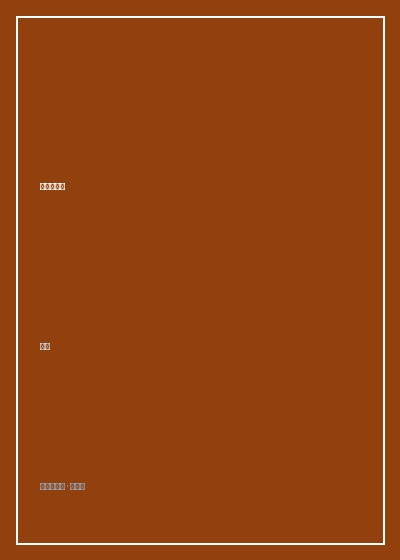

《问道江南西》

总体观点
江南西不仅是广州海珠区一条繁华的商业街，更是华南沿海改革开放以来城市空间演进的经典样本。它浓缩了从工厂生活区、自建房自发商业到青年亚文化聚集地的多重叠影。
作者打破了传统城市规划自上而下的宏大视角，深入后街小巷、老旧梯间与排档后厨，展现普通市井居民如何通过自发的空间微改造，将冰冷的水泥街区转化为温润宜居的人情熟人社会。
在狂飙突进的城市更新与同质化商业连锁狂潮中，《问道江南西》为我们提供了一份珍贵的城市在地性防守范式：留住街道的毛细血管与烟火气，才是城市灵魂的真正皈依。
核心观点
-
1. 自发演进的街区生命力：后街小店的商业杂食性
江南西最初的商业繁荣并非由政府规划一手包办，而是居民利用首层住宅违规破墙开店自发形成的有机生态，展现出强大的民间韧性。
九十年代退休阿婆把临街窗台改装成卖冻奶茶和鱼蛋的小档口，逐步演变为辐射全区的美食步行街雏形。 -
2. 初代文青的精神飞地：独立咖啡馆与手作工坊的拓荒
在珠江新城CBD尚未崛起的千禧年初，江南西低廉的租金与树影婆娑的环境吸引了广州第一批独立设计师、摇滚乐手与手艺人筑巢。
老居民楼二楼隐藏的无招牌咖啡馆，白天是独立摄影师的暗房，夜晚化身青年诗人的读诗会沙龙。 -
3. 熟人社会的邻里温存：折叠空间里的街坊契约
老广街区最坚固的护城河是邻里之间数十年如一日的默契与信任，下楼买菜顺便托邻居照看煤气灶是生活常态。
杂货店老伯认得整条街所有街坊的面孔，小孩放学没带钥匙便在店里写作业吃饼干直到家长下班领回。 -
4. 网红经济的双刃剑：流量狂欢与在地文脉的博弈
短视频打卡经济让江南西迅速破圈，但租金飞涨与过度同质化的奶茶烘焙店也正在无情挤压老字号修鞋铺与裁缝摊的生存空间。
经营三十年的老式理发店因房东转租给网红柠檬茶品牌被迫迁出，老街坊们在告别之夜自发包场合影留念。 -
5. 城市微更新的人本尺度：保留毛细血管的街巷哲学
真正的城市改造不是全盘推倒重建打造玻璃幕墙怪兽，而是修补下水管道、加装电梯与保留浓荫大树的人性化微创手术。
江南西在微改造中保留了弯曲错综的内街石板路与老榕树根系的石凳，让老年人依然能在熟悉的树荫下下棋闲聊。
全书思维导图 · 知识脉络树
全书结构
-
第一章 水网与老街：江南西的地理前世与村落根脉
追溯瑶头村、隔步涌等海珠水网村落的历史肌理，还原农田、河涌交错的前工业时代岭南水乡地貌。
查阅老地图与族谱，挖掘马涌两岸早期果林与码头渡口的航运往事，奠定街区依水而生的地理基因。 -
第二章 工人新村的印记：橡胶厂与缝纫机宿舍的集体记忆
讲述上世纪七八十年代广州轻工业鼎盛时期，国有大厂职工家属院在江南西的兴建与大院熟人生活风貌。
万宝冰箱厂老职工回忆当年骑二八大杠自行车下班、在红砖大院广播站喇叭声中排队打热水的集体岁月。 -
第三章 潮流的涌动：九十年代初代文青与特色小店实验场
记录改革开放春风下破墙开店的自发商业潮，第一代外贸服装店、打口碟店与动漫模型屋在此蓬勃兴起。
全广州最早的进口原盘CD店藏在江南西六运小区深处，成为华南摇滚乐迷与文艺青年的朝圣秘密基地。 -
第四章 烟火深处：煲仔饭、牛杂摊与深夜糖水铺的市井哲学
细致描摹江南西美食江湖的味觉地理，探讨广府饮食文化中讲求食材锅气、性价比与市井温情的生活哲学。
老师傅在三平米逼仄厨房里一口砂锅、一把明火烧出金黄焦香饭焦，几十年如一日坚持用瓦煲慢炖。 -
第五章 转型与坚守：在城市更新与网红打卡浪潮中留住街坊温情
直面近十年社交媒体流量经济对街区的重塑，探讨社区营造者、年轻店主与原住民在士绅化浪潮中的协商共生。
年轻咖啡馆主主动在店门口摆放给环卫工人免费饮用的凉茶桶，促成新旧社区力量的善意融合。 -
后记：一座城市的呼吸藏在背街小巷的折叠空间里
作者深情寄语城市管理者与规划者，呼吁珍视自发演进的街市生活，让城市留住记忆与烟火温存。
黄昏时分站在天桥看着穿梭在榕树荫下的电瓶车与放学的孩童，作者写下'只要街巷还在，广州的灵魂就不会老去'。